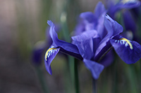

After my kids grow up and leave the house, I have more time. I spend more time on photography.
Walking in a park, observing flowers, birds, landscape and people, capturing on interesting scenary to my
camara is one thing I usually do on my spare time. The following are some pictures
I took in my recent years.
Some of my pictures
Walking in the Arboretum in January is cold, and it is fun too when capture this beaufiful snow scenary
This builing is located in Chicago downtown
Stretch at sunset time in front of Pacific Ocean.

Purple is one of my favorite color. Spring is coming.
Ignore who is taking picture, just enjoy our time together.
Chicago Botanical Garden Orchid show is held Feb-Mar every year. I want to go twice every year.